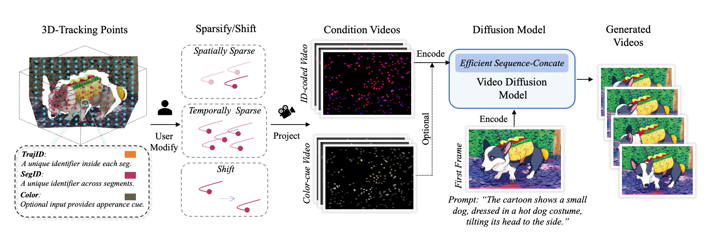
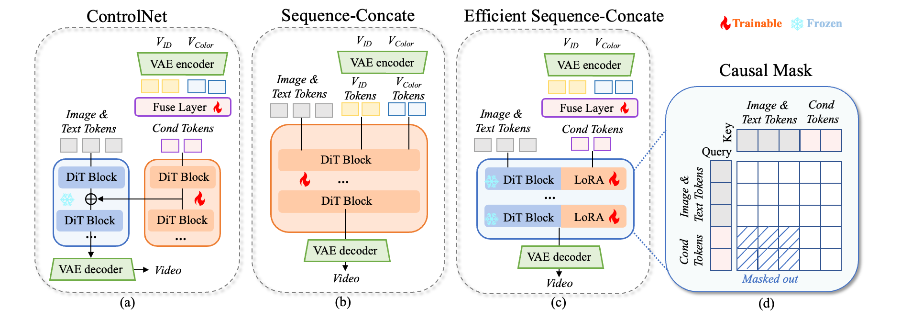
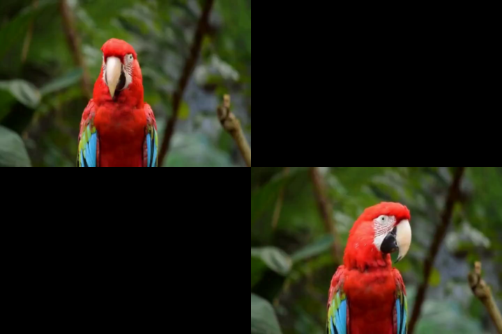
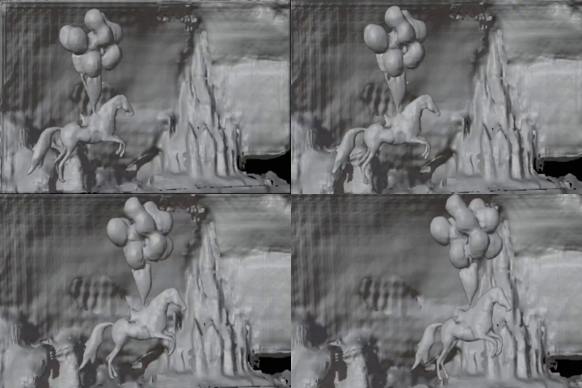
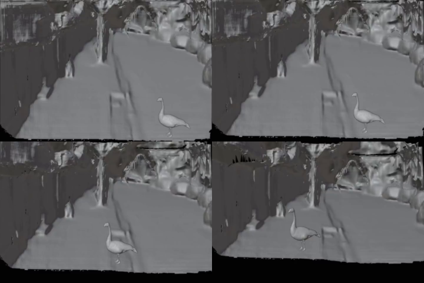

We present FlexTraj, a framework for image-to-video generation with flexible point trajectory control. FlexTraj introduces a unified point-based motion representation that encodes each point with a segmentation ID, a temporally consistent trajectory ID, and an optional color channel for appearance cues, enabling both dense and sparse trajectory control. Instead of injecting trajectory conditions into the video generator through token concatenation or ControlNet, FlexTraj employs an efficient sequence-concatenation scheme that achieves faster convergence, stronger controllability, and more efficient inference, while maintaining robustness under unaligned conditions. To train such a unified point trajectory-controlled video generator, FlexTraj adopts an annealing training strategy that gradually reduces reliance on complete supervision and aligned condition. Experimental results demonstrate that FlexTraj enables multi-granularity, alignment-agnostic trajectory control for video generation, supporting various applications such as motion cloning, drag-based image-to-video, motion interpolation, camera redirection, flexible action control and mesh animations.




